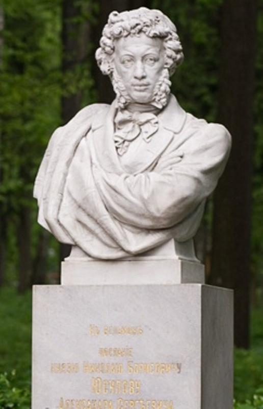

|  | Министерство культуры Российской Федерации Портал Культура.рф Проект «Образы России» |
Музей-усадьба Архангельское
Памятник А.С.Пушкину и Пушкинская аллея

Аллея и памятник – символический образ «пушкинской эпохи»: череда мраморов (бюсты античных персонажей) вторит движению к скульптурному портрету поэта в тени высоких деревьев, его «визави» в противоположном конце аллеи - жёсткий силуэт колонны Александра I.
А.С.Пушкин приезжал в усадьбу к князю Н.Б.Юсупову в 1827 с московским другом библиофилом С.А.Соболевским. Красота и богатство Архангельского покорили их. Н.Б.Юсупов показывал гостям свое художественное собрание и превосходную библиотеку. Спустя два года А.С.Пушкин в поэтическом Послании воздал дань удивительной жизни человека, сохранившего в себе лучшие черты славной эпохи - от Екатерины Великой до Николая I. В августе 1830 года поэт еще раз побывал в гостях у Юсупова с П.А.Вяземским, «и просвещённый вельможа екатерининских времён встретил их со всей любезностью гостеприимства».
Знакомство с князем ведёт начало с детских лет поэта. Позднее Юсупов был посажённым отцом на свадьбе Пушкина. В семье Юсуповых хранились автографы Пушкина, переданные В.А.Жуковским.
В 1903 году потомки Николая Борисовича поставили с парке мраморный бюст Пушкина, выполненный в мастерской Кутырина На пьедестале памятника –строфы из послания «К вельможе».